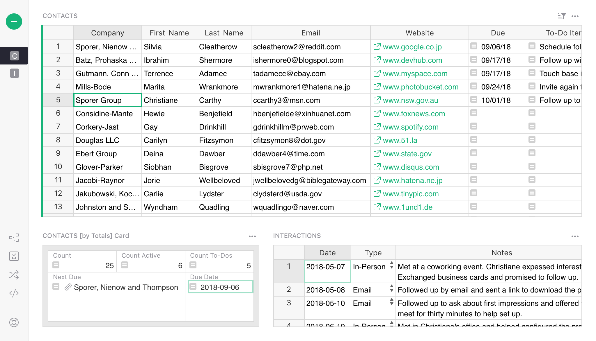
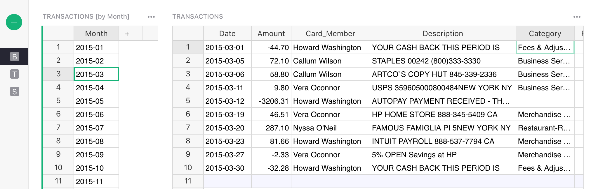
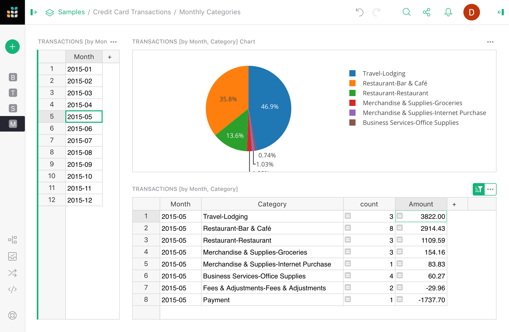

Custom Layouts#
You can easily add multiple widgets to one page, as described in Page widgets, and link them as described in Linking widgets. It is also easy to customize their arrangement.
Move the mouse cursor over the title of the widget. A small drag icon will appear over to the left of the title. When you press this icon, you can drag the entire widget to a different place on the screen.

As you move it close to the edge of the screen, or the edge of another widget, you’ll see a dashed outline – sometimes more than one – where the widget can be dropped.

Release the mouse to reposition this widget.
To resize widgets, move the mouse cursor between two widgets until a dashed line appear. Drag this dashed line to resize.

Layout recommendations#
While there is no limit to how complicated a layout you can create, you should aim for simple layouts that will be easy to use for your users (even when you are the only user!)
One rule of thumb is that a widget controlled by another “selector” widget (see Linking widgets) should be to the right or below it.
Here are some common layouts.
Layout: List and detail#
The most common one is to have a list of items on the left, with one or more widgets on the right providing more information. For instance, the Lightweight CRM example includes a list of people on the left, with a person’s card and a table of related interactions to the right of the list.

In this usage, you might want to include in the list only the minimal information you need, perhaps only a contact’s name. If your table has many columns, a quick way to leave only a few is via the widget options in the right-side panel. In the table widget, click the three-dot menu on the top right, and select “Widget options”.

You’ll see a list of “Visible Columns”. Click “Select all” link on top of that list:

Now uncheck the few fields you want to keep, and click “Hide columns” to hide the rest.
Layout: Spreadsheet plus#
Sometimes a wide spreadsheet with many columns is convenient. If you’d like to see more info associated with the rows of this spreadsheet, you can add widgets below it. These could be details linked to the spreadsheet, or summary tables that show totals or other global info.
For instance, here is a possible layout based on the Lightweight CRM example. It shows contacts as a wide spreadsheet, and below that includes sections with an overall summary, and interactions for the selected contact.

Layout: Summary and details#
Sometimes it’s useful to divide up a large dataset into subsets. For instance, you might have credit card transactions, and want a way to view them one month at a time. To do it, you’ll use a “Month” column, creating one with a formula if needed. Then create a summary table grouped by “Month” (see Summary tables, and link the table of transactions to it.

We can then select a month and see a spreadsheet of only the transactions in that month.
Layout: Charts dashboard#
If you have many charts, you can just lay them out in a grid to create a top-level dashboard.

For dynamic charts in which data is selected by another table, a layout like List-and-detail above would work well. One tip is to include both a Table widget and a Chart widget, configured and linked the same way, and differing only in the widget type:

Having a table alongside the chart can be a useful reference, as well as provide more context to what is visible in the chart.